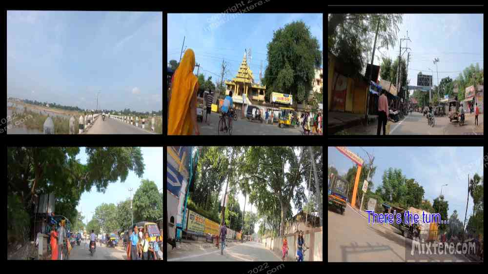

Although the two-day journey had exhausted me thoroughly, I was keen to return to the Mahabodhi. So much time had passed, the memories revisited so many times, at this proximity I was driven by a sense of urgency and had to make an effort to return. I had the romantic notion of bicycling there. Plane travel is unnatural and throws the body off. I saw the bike as a more humane return to the world that I had transplanted myself back into. During the night sleep had been evasive if it had been achieved at all. I was still reeling from the new environment. The dust and smog and heat were oppressive and in the street, the noise was deafening. But I was committed to the notion of the bike journey. So the day after I arrived I borrowed the guesthouse’s bicycle and rode it to the temple with a GoPro camera affixed to the front.
Drunk with a powerful cocktail of nostalgia and fatigue I set off down the village lane on the old bike. The new world around me was delightfully and terrifyingly overwhelming. Years ago, during the orientation meetings for the Buddhist Studies program, Robert had told us that it would take a good three to four weeks to make the transition to start to be comfortable in rural Bihar. He told us to anticipate emotional dips during this process. And here I was launching out into the streets the day after arrival. But I couldn’t wait-I had been waiting decades to return to this place. Sensory overload hit me the moment the bike entered the village lane. Soon I was dodging people, poop, motorcycles, bicyclists, cows, goats, dogs, construction workers, gaping trenches in the road and countless other obstacles. People and their sounds were reverberating off of every surface and jangling my brain. I rode past a seller calling out his wares in a loud, nasal tongue as he pushed his cart down the village road.
I had never been to Sujata Village and everything I was seeing was new. My heart raced as I peddled around obstacles and took it all in. Hindi and Devanagari script spooled on faded advertisements that were peeling in the tropical sun . Vehicles grumbled all around, blasting horns, revving engines and spewing rich exhaust everywhere. I pressed on, straining against the rusty chain of the bike and the soft dirt underneath me. The people around me seemed so at peace with the environment that was straining my very being. The task of riding the bike helped me to focus and hold sensory overload at bay. Soon I was out of the village and riding on proper pavement I followed the snaking road to the bridge that crossed the river and I turned onto it. The vast, parched bed of the Niranjana river spread out on either side of the bridge. Traffic thickened.
Busses, bicyclists, pedestrians, animal-powered carts, cars, tractors, rickshaws and motorcycles roared by me. I marveled at how they all seemed packed beyond capacity. On both sides of me people were doing their washing in the remaining trickles of the river. Their impossibly-cleaned items lay drying on the warm sands of the riverbed. An old thought returned, how people could get their clothes so clean in such dirty water. The sun beat down through my hat and blasted my poor scalp. I began to sweat and my legs to feel the burn. Soon I was at the end of the bridge and entering Bodh Gaya. I was coming up on the Burmese Vihar, the place where the seed of India had been planted in me so many years ago. It was a surreal sight after so much reflection for so many years.The area had been built up considerably. The Vihar, still recognizable, poked up out of the middle of it all. There was the iron gate that, when we were students, was promptly locked at 10 pm. A bunch of new shops, shacks and buildings now crowded the Vihar’s location. On the other side of the street I was just able to make out the Pole Pole restaurant. This was where Gum, the kind proprietor, had served my fellow students and I simple dinners. It was chained shut but still standing.
As memories contrasted with the current moment I focused on the cycling task at hand and let the Vihar pass. Development and traffic thickened. Everywhere were people, horns, exhaust, livestock…and more horns. My progress toward the temple slowed as the road seemed to narrow and the sheer volume of life around me intensified. My heart quickened its pace. High-treble music blared from shops and vehicles all around, adding to my disorientation. I focused again on pumping the pedals of the old bike and staying out of harm’s way. Memories returned of how familiar a preoccupation this had been for me on the Indian roads.
As I came deeper into town I noticed an unfamiliar fork in the road. I continued forward, stubbornly telling myself that I knew where I was going. The lane began to narrow to the point where cars were not able to pass. The density of pedestrians around me increased again. Then, in less than a minute, the sight of familiar things stopped coming. I continued on at a slower pace, troubled by the a feeling that something wasn’t right. About five minutes later I was at a loss. My travel-induced state has prevented me from remembering the key fact Robert had told me. That was that the road had been rerouted and the old way didn’t exist anymore. Metaphorically I was going to have to learn this lesson again and again. With bruised pride I pulled out my phone to consult for directions. The screen showed a mysterious route that curved in a long arc from where I was. I turned around and tried to follow it.
I returned to the mysterious junction and this time rode up the hill and came up over a rise skirted by shacks and a little tent market. A large Indian military vehicle in the middle of the road gave my heart an unwelcome flutter. Seeing that the vehicle was unoccupied I relaxed a little. People and vehicles continued to swim around me as I peddled. The phone’s navigation directions were barely audible over the din. I stopped occasionally to look at the map. Soon I had completed the long arcing route and had turned left. Immediately I recognized where I was. And there was the Mahabodhi temple complex in front of me.. My exhausted heart surged at the sight. There was the spire of the temple rising up from the complex walls. Some development had taken place but I could see familiarity within it all. So it had not been a dream. I had not imagined my time here almost a quarter of a century ago.
I dismounted and stared ahead, taking a long drink of some electrolytes. Then I rested in the shade of a tree to cool and catch my breath. I viewed the temple complex again and then let my tired eyes allow it to blur in front of me.

I noted the changes that Robert had told me about. Management had added walkways and some parks and stupas and gardens and things. They had also added CCTV cameras, metal detectors and security personnel as there had been a failed bombing incident. Additionally, there was now a kiosk that demanded payment for entry, took down personal details, checked articles and charged for the use of cameras. A long promenade had been built to ferry visitors through the new entry point and the metal detectors. After all that effort I noticed that the detectors were sending off alarms regularly. The stationed security staff were doing an excellent job of ignoring these. A large wall had been erected to the side of this walkway. It featured carvings or cement castings showing illustrations of periods of the Buddha’s life. it looked to be less than ten years old and cheapened the feel of the holy spot. Like the town, the temple felt more developed and crowded. But it still felt tranquil relative to the bustling surroundings. My re-education that “nothing is permanent” was continuing.
Feeling that I only had enough energy to turn around and get myself back to the guesthouse I went about doing so. Thankfully much of the way was downhill and away from the flow of traffic. In no time I was back at the road junction at the Burmese Vihar. I decided to pop in to have a look. More lessons awaited me there. The already extensive complex had been filled in with even more four-story dorm style buildings and the compound felt much more constricting than before. The trees and the large rice fields that used to provide peaceful views from the dorms were gone. There was what looked to be a sort of information booth to the left of the entry gate. I headed there. My memory was checked again when the familiar face of Santosh came to greet me. My brain had opted not to hold onto this Vihar fixture. But here he was in front of me, with Elvis sideburns to boot. In a flash I remembered. I could hear the former program assistant referring to him as “Santoast.” The side-burned man told me that the program staff were busy in meetings and that I was to return later.
Reeling from everything my being was processing, I thanked him and returned to the bike. Now quite disoriented, I swung a leg over the frame, mounted the bike… made a left instead of going over the bridge. Thankfully I had only traveled fifty yards when I realized this error. However, no sooner did I turn and head for the bridge than the chain came off the sprocket. I began walking the bike toward the bridge. Hardly a minute had passed before a kindly Indian man stepped up to me and informed me that the chain had fallen off. He then bent down and simply treaded it back on the sprocket with his bare hands. I had thought that a tool was necessary for this and thanked the man profusely. He smiled and went on his way. Feeling grateful and recognizing the pressing need for rest, I remounted and started over the bridge. If it hadn’t been activated in full before, my 4th-wind kicked in. It was survival mode that helped me get back to the guest house. When I made it to my bed a mysterious illness took me over lingered for four days. I did my best to rest.